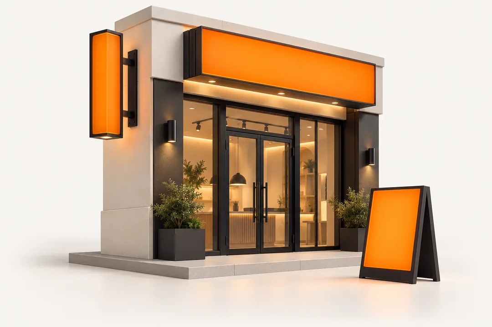

Услуга простыми словами
Таблички: что вы получите
Табличка помогает посетителю понять, куда идти, когда вы работаете и как связаться. Размер, основу и крепление выбираем для помещения или улицы.
- Табличка с согласованным текстом и изображением.
- Выбранные размер, материал и количество.
- Отверстия или другой способ крепления, если он включён в заказ.
Для начала: Точный текст, логотип, размер, место установки и количество.
Крепёж, установка и требования к специальным табличкам обсуждаются до изготовления.
Рассчитать мой вариантКакие таблички можно заказать
Режим работы
Аккуратная табличка или наклейка на дверь с графиком, телефоном и логотипом.
Адресные таблички
Для частных домов, офисов, магазинов, складов и организаций.
Офисные таблички
Номера кабинетов, названия отделов, навигация по помещению.
Информационные
Правила, предупреждения, инструкции, графики, служебная информация.
Для торговли
Ценники, указатели, акции, категории товаров, зоны выдачи.
С макетом
Подготовим дизайн в едином стиле с вашим бизнесом.
Почему это важно
Таблички помогают клиенту быстрее найти вход, понять график работы, ориентироваться в помещении и воспринимать бизнес более аккуратно. Небольшая табличка часто стоит недорого, но заметно повышает порядок и доверие.
Заявка на табличку
Укажите размер, текст, место размещения и количество. Если не знаете материал — подскажем.
Телефон: 8 980 245-74-71